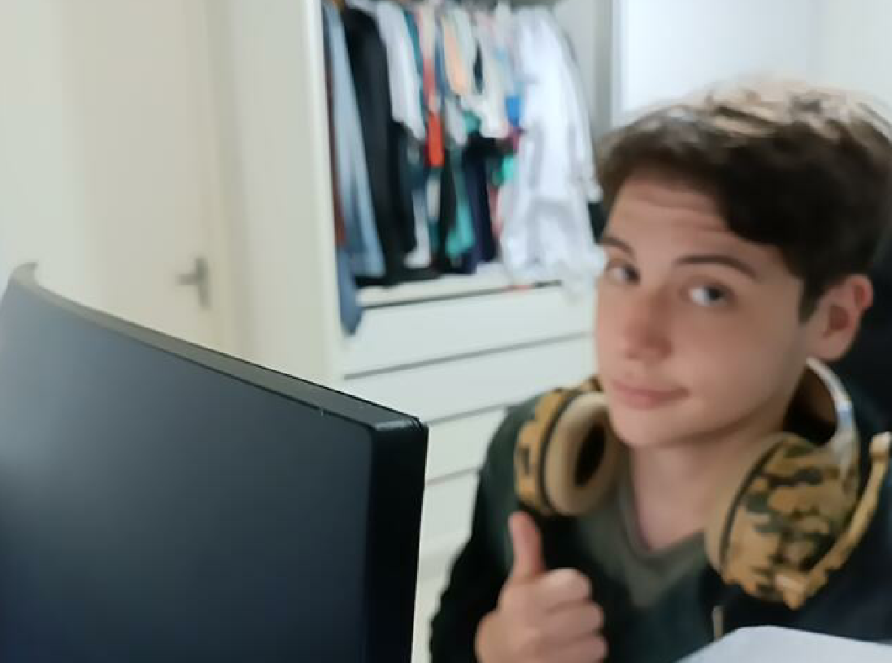
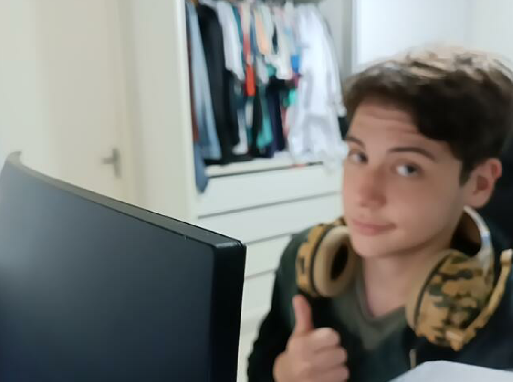

Elebrakc
Eu tenho um amigo muito especial chamado Elebrakc. Ele é uma pessoa divertida, leal e generosa, que sempre me apoia nos momentos difíceis. Ele tem um cabelo bagunçado que parece que nunca foi penteado, mas eu acho que isso faz parte do seu charme. Ele também tem um bigode que ele cultiva com orgulho, e que combina com o seu corpo peludo. Ele diz que é um homem das cavernas moderno, e eu concordo.
Ele também gosta de jogar lol, mas ele é low elo e sempre perde as partidas. Ele não se importa muito com isso, ele diz que o importante é se divertir e aprender com os erros. Eu admiro a sua atitude positiva e o seu senso de humor.
Ele é um amigo que eu valorizo muito e que eu espero ter por perto por muito tempo. Ele tem um personagem favorito no lol, que é o Yone. Ele diz que com ele consegue trazer resultados para o seu time, mas eu acho que ele exagera um pouco. Ele também tem um segredo que poucos sabem: ele é um foragido da polícia. Ele fugiu da cadeia depois de pular o muro do Anglo. Ele diz que fez isso porque a sala dele é retardada, mas eu não sei se acredito. Ele também tem uma luta histórica contra a escola. Ele nunca gostou de estudar e sempre faltava às aulas. Ele diz que a escola é uma prisão e que ele prefere aprender na vida. Eu respeito a sua opinião, mas eu acho que ele perdeu muitas oportunidades por causa disso. Ele é um amigo que me surpreende a cada dia e que eu adoro mesmo com os seus defeitos.
Ele também é lindo olhe :

Buratto
Eu tenho um amigo chamado Enzo Buratto, que é uma pessoa muito especial para mim. Ele é um amigo fiel, sincero e divertido, que sempre me faz rir com as suas piadas de preto e índio. Ele tem uma viadagem enorme para jogar qualquer jogo. Ele gosta de experimentar coisas novas e de se desafiar. Ele tem um problema, porém: ele não gosta de nenhum jogo que o just crias quer jogar. Ele sempre reclama que os jogos são chatos, repetitivos ou difíceis demais. Ele diz que prefere jogar sozinho ou com outros amigos que têm o mesmo gosto que ele. Ele é muito teimoso e não aceita a opinião dos outros. Ele também não consegue jogar lol e valorant, que são os melhores jogos do mundo na minha opinião. Ele diz que esses jogos são muito complicados e que ele não tem paciência para aprender. Ele prefere jogar jogos mais simples e casuais, como CS e ARK.
Ele tem uma qualidade que compensa os seus defeitos: ele é lindo. Ele tem um rosto bonito, um sorriso encantador e um corpo sarado. Ele chama a atenção por onde passa e faz sucesso com as mulheres. Ele sabe que é bonito e usa isso a seu favor. Ele é confiante e charmoso, mas também humilde e gentil. Ele não se acha melhor do que ninguém e trata todos com respeito(kkk). Ele é um amigo que eu admiro muito e que eu quero ter sempre por perto.
Ele tem uma característica que pode ser vista como uma virtude ou um defeito: ele faz piada com todos os tipos de minorias. Ele não tem medo de ser politicamente incorreto e de falar o que pensa. Ele diz que as suas piadas são apenas brincadeiras e que ele não tem preconceito contra ninguém(kkk). Ele diz que as suas piadas são uma forma de implantar o Bolsonarismo no Brasil a fora. Ele diz que as suas piadas são uma forma de fazer as pessoas rirem e de aliviar as tensões. Eu entendo o seu ponto de vista, mas eu acho que as suas piadas podem ofender algumas pessoas e causar problemas para ele. Eu acho que ele deveria ter mais cuidado com o que diz e com quem diz. Eu acho que ele deveria respeitar mais a diversidade e a sensibilidade das pessoas. Ele é um amigo que me diverte muito, mas que também me proporciona muito dos prazeres da vida rs.
Veja ele a seguir:

 

Vitinho
Eu tenho um primo chamado Vitinho, que é uma pessoa muito querida por mim. Ele é um primo companheiro, alegre e divertido, que sempre está comigo nas horas boas e ruins. Ele tem uma habilidade de ser ruim em quase todos os jogos que joga, mas isso não o impede de jogar de tudo. Ele joga lol, valorant, sea e muitos outros jogos, mas ele desempenha mau. Ele não se abala com isso, ele diz que o importante é participar e se divertir, assim como o Brakc. Ele diz que os jogos são apenas um passatempo e que ele não leva nada a sério. Eu admiro a sua humildade e o seu otimismo. Ele é um primo que eu me divirto muito e que eu aprendo muito.
Ele tem um jogo que ele se destaca, que é o vava. Ele joga quase bem esse jogo e é o melhor duo que eu já vi. Ele sabe todas as estratégias, os truques e os macetes desse jogo. Ele me ensina decepciona em muitas coisas e me ajuda a melhorar. Ele diz que esse jogo é o seu favorito e que ele se sente realizado jogando ele. Ele diz que esse jogo é o seu talento e que ele se orgulha disso. Eu fico feliz por ele e por nós dois. Ele é um primo que eu me orgulho muito e que eu adoro jogar junto.
Ele tem uma característica que pode ser vista como uma virtude: ele faz piadas com pessoas gordas e feias. Ele não tem medo de ser engraçado e de zoar os outros. Ele diz que as suas piadas são apenas brincadeiras e que ele tem tudo contra essas pessoas. Ele diz que as suas piadas são uma forma de se expressar e de mostrar o seu humor. Ele diz que as suas piadas são uma forma de fazer as pessoas rirem e de se divertirem. Eu entendo o seu ponto de vista, mas eu acho que as suas piadas podem magoar algumas pessoas e causar mal-estar para ele. Eu acho que ele deveria zuar mais kkk. Eu acho que ele deveria virar faca na caveira e impor isso na escola para todos. Ele é um primo que me faz rir muito, mas que também me faz pensar às vezes. (CAVEIRAAA)
Olhe o homem a seguir: